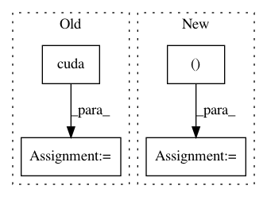

031392ff2cbb5703558d17a676a456521f754190,mnist/main.py,,train,#Any#,67
Before Change
batch_data_t = torch.FloatTensor(BATCH_SIZE, 1, 28, 28)
batch_targets_t = torch.LongTensor(BATCH_SIZE)
if cuda:
batch_data_t = batch_data_t.cuda()
batch_targets_t = batch_targets_t.cuda()
batch_data = Variable(batch_data_t, requires_grad=False)
batch_targets = Variable(batch_targets_t, requires_grad=False)
for i in range(0, training_data.size(0), BATCH_SIZE):
optimizer.zero_grad()
batch_data.data[:] = training_data[i:i+BATCH_SIZE]
After Change
batch_data = torch.FloatTensor(opt.batchSize, 1, 28, 28)
batch_targets = torch.LongTensor(opt.batchSize)
if cuda:
batch_data, batch_targets = batch_data.cuda(), batch_targets.cuda()
// create autograd Variables over these buffers
batch_data, batch_targets = Variable(batch_data), Variable(batch_targets)
In pattern: SUPERPATTERN
Frequency: 4
Non-data size: 4
Instances
Project Name: OpenNMT/OpenNMT-py
Commit Name: 031392ff2cbb5703558d17a676a456521f754190
Time: 2016-12-15
Author: soumith@fb.com
File Name: mnist/main.py
Class Name:
Method Name: train
Project Name: OpenNMT/OpenNMT-py
Commit Name: a7a5cdc598afd6afa3d0e9d355360bebc4947c29
Time: 2017-01-24
Author: bryan.mccann.is@gmail.com
File Name: snli/model.py
Class Name: Encoder
Method Name: forward
Project Name: OpenNMT/OpenNMT-py
Commit Name: 2c3dd6f3bd666bf7aeee2786dd00bc577b08bc0e
Time: 2017-06-26
Author: srush@sum1gpu02.rc.fas.harvard.edu
File Name: onmt/Models.py
Class Name:
Method Name: get_attn_subsequent_mask
Project Name: OpenNMT/OpenNMT-py
Commit Name: 031392ff2cbb5703558d17a676a456521f754190
Time: 2016-12-15
Author: soumith@fb.com
File Name: mnist/main.py
Class Name:
Method Name: test